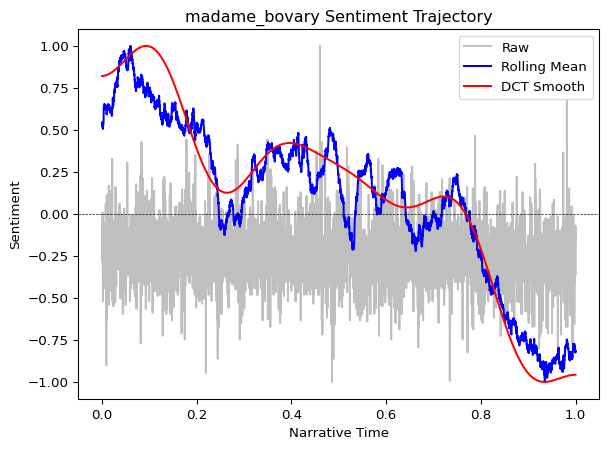
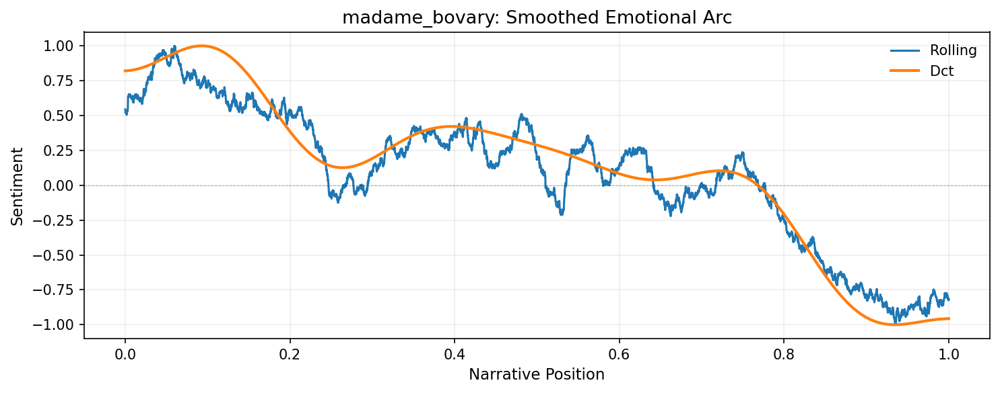

from moodswing import (
DictionarySentimentAnalyzer,
Sentencizer,
DCTTransform,
prepare_trajectory,
plot_trajectory,
)
from moodswing.data import load_sample_textGet started
This walkthrough demonstrates the complete workflow: loading a sample novel, splitting it into sentences, scoring each sentence, and plotting a smoothed sentiment trajectory that reveals the story’s emotional arc.
Background: Why track sentiment over narrative time?
Stories follow emotional patterns. As readers, we intuitively recognize rising tension, climactic moments, and resolutions. Computational sentiment analysis makes these patterns visible and measurable (Jockers 2015; Reagan et al. 2016).
By scoring the sentiment of each sentence in a novel and smoothing those scores, we can visualize the narrative arc—the trajectory of emotional valence from beginning to end. Research has shown that stories cluster around a small number of archetypal shapes (Reagan et al. 2016), and that analyzing these arcs can reveal otherwise hidden structures in narrative (Elkins 2025; Hu et al. 2020).
The moodswing package brings this approach to Python, implementing the same workflow as the R syuzhet package (Jockers 2015) while adding modern NLP options. This method has become widely used in digital humanities research (Rebora et al. 2023), particularly for analyzing large corpora where close reading alone would be impractical.
Prerequisites
Import the high-level helpers we’ll use throughout this guide:
Loading a text
The package bundles several public-domain novels for experimentation. Each helper returns a tuple of (doc_id, text):
doc_id, text = load_sample_text("madame_bovary")
print(f"Loaded: {doc_id}")
print(f"Length: {len(text):,} characters")Loaded: madame_bovary
Length: 648,257 charactersYou can also load your own texts using load_text_file() or load_text_directory() (see the API reference for details).
Splitting text into sentences
Sentence-level analysis is the foundation of sentiment trajectories. The Sentencizer uses NLTK’s Punkt tokenizer, which handles abbreviations, quotations, and other boundary ambiguities:
sentencizer = Sentencizer()
sentences = sentencizer.split(text)
print(f"Total sentences: {len(sentences)}")
print("\nFirst five sentences:")
for i, sent in enumerate(sentences[:5], 1):
print(f"{i}. {sent[:70]}...")Total sentences: 6943
First five sentences:
1. Part I Chapter One We were in class when the head-master came in, foll...
2. Those who had been asleep woke up, and every one rose as if just surpr...
3. The head-master made a sign to us to sit down....
4. Then, turning to the class-master, he said to him in a low voice-- "Mo...
5. If his work and conduct are satisfactory, he will go into one of the u...Scoring sentences
DictionarySentimentAnalyzer evaluates each sentence by summing the sentiment values of its constituent words. We’ll use the Syuzhet lexicon, which was designed specifically for narrative analysis (Jockers 2015):
analyzer = DictionarySentimentAnalyzer()
scores = analyzer.sentence_scores(sentences, method="syuzhet")
print(f"Score range: [{min(scores):.2f}, {max(scores):.2f}]")
print(f"Mean score: {sum(scores)/len(scores):.3f}")
print(f"\nFirst five scores: {scores[:5]}")Score range: [-4.90, 8.20]
Mean score: 0.060
First five scores: [1.2000000000000002, 0.25, 0.0, 1.5, 1.05]Each score represents the emotional valence of that sentence: positive numbers indicate pleasant or optimistic language, negative numbers indicate unpleasant or pessimistic language, and zero indicates neutral or absent sentiment words.
Try different lexicons
The method parameter accepts "syuzhet" (default), "afinn", "bing", or "nrc". Each lexicon has different characteristics. See Using sentiment lexicons for detailed comparisons.
Transforming the scores
Raw sentence-by-sentence scores are noisy—individual words can spike the signal. We apply two smoothing operations to reveal the underlying emotional trajectory:
- Rolling mean: A moving average that reduces local noise
- Discrete Cosine Transform (DCT): A spectral smoothing technique that emphasizes the overall shape
Both are computed by prepare_trajectory():
trajectory = prepare_trajectory(
scores,
rolling_window=max(3, int(len(scores) * 0.1)), # ~10% of sentences
dct_transform=DCTTransform(
low_pass_size=10, # Keep only low-frequency components (note that a lower value like 5 will show less fluctuations)
output_length=200, # Interpolate to 200 points for plotting
scale_range=True # Normalize to [-1, 1]
),
)
print(trajectory)TrajectoryComponents(raw=array([-0.06870229, -0.21374046, -0.2519084 , ..., -0.36641221,
-0.06870229, -0.16030534], shape=(6943,)), rolling=array([ 0.5443787 , 0.54224028, 0.52419473, ..., -0.82508478,
-0.81303351, -0.81826638], shape=(6943,)), dct=array([ 0.8207369 , 0.82298883, 0.8274407 , 0.83398953, 0.84248315,
0.85272299, 0.86446766, 0.87743733, 0.89131877, 0.90577107,
0.92043177, 0.93492343, 0.94886051, 0.9618563 , 0.97353001,
0.98351363, 0.99145867, 0.99704247, 0.99997417, 1. ,
0.99690802, 0.99053207, 0.98075494, 0.96751068, 0.95078606,
0.93062106, 0.9071085 , 0.8803927 , 0.85066734, 0.81817246,
0.78319065, 0.74604256, 0.70708184, 0.66668949, 0.62526776,
0.58323389, 0.54101343, 0.49903367, 0.45771702, 0.4174745 ,
0.37869959, 0.34176234, 0.30700404, 0.27473237, 0.24521719,
0.21868704, 0.19532636, 0.17527353, 0.15861964, 0.14540813,
0.13563521, 0.12925101, 0.12616159, 0.12623149, 0.12928701,
0.13512006, 0.14349238, 0.1541403 , 0.16677965, 0.18111096,
0.19682477, 0.21360684, 0.23114337, 0.24912599, 0.26725645,
0.285251 , 0.30284431, 0.3197929 , 0.33587806, 0.35090817,
0.3647204 , 0.37718186, 0.38819003, 0.39767269, 0.40558721,
0.41191928, 0.4166812 , 0.41990967, 0.4216632 , 0.42201926,
0.42107108, 0.41892445, 0.41569425, 0.41150111, 0.40646808,
0.40071746, 0.39436784, 0.38753139, 0.38031154, 0.37280094,
0.3650799 , 0.35721524, 0.34925962, 0.34125124, 0.33321408,
0.32515849, 0.31708228, 0.30897206, 0.30080497, 0.29255066,
0.28417347, 0.2756348 , 0.26689547, 0.25791817, 0.24866983,
0.23912386, 0.2292622 , 0.21907712, 0.20857278, 0.19776631,
0.1866887 , 0.17538507, 0.16391471, 0.15235051, 0.14077808,
0.12929436, 0.1180059 , 0.10702675, 0.09647595, 0.08647489,
0.07714434, 0.06860135, 0.06095614, 0.05430885, 0.04874648,
0.0443399 , 0.04114108, 0.03918061, 0.03846557, 0.03897779,
0.0406726 , 0.043478 , 0.04729446, 0.05199523, 0.05742719,
0.06341228, 0.06974955, 0.07621761, 0.08257769, 0.08857708,
0.093953 , 0.09843674, 0.10175813, 0.10365012, 0.10385346,
0.1021214 , 0.09822429, 0.091954 , 0.08312807, 0.07159349,
0.05723013, 0.03995358, 0.01971745, -0.0034849 , -0.02961932,
-0.05861052, -0.09034243, -0.12465922, -0.16136707, -0.20023661,
-0.24100593, -0.28338431, -0.32705633, -0.37168657, -0.41692463,
-0.46241041, -0.50777968, -0.55266968, -0.59672474, -0.6396018 ,
-0.68097573, -0.72054435, -0.75803306, -0.793199 , -0.8258346 ,
-0.85577062, -0.88287838, -0.90707139, -0.92830613, -0.94658213,
-0.96194126, -0.97446622, -0.98427839, -0.99153489, -0.99642508,
-0.99916644, -1. , -0.99918528, -0.99699502, -0.99370961,
-0.98961144, -0.98497927, -0.98008263, -0.97517647, -0.97049613,
-0.9662527 , -0.96262882, -0.95977511, -0.95780719, -0.95680345]))The TrajectoryComponents object holds three arrays: - raw: Original normalized scores - rolling: Rolling-mean smoothed scores
- dct: DCT smoothed scores (the “narrative arc”)
Plotting a sentiment trajectory
Visualize all three curves together to see how smoothing reveals narrative structure:
plot_trajectory(trajectory, title=f"{doc_id} Sentiment Trajectory")
Interpreting the plot:
- Gray dots/line (raw): Noisy sentence-level scores
- Blue line (rolling mean): Medium-term emotional trends
- Red line (DCT smooth): The overall narrative arc—the “shape” of the story
The DCT curve reveals the story’s broad emotional structure. In many narratives, you’ll see classic patterns: a gradual rise to a climactic peak, followed by a fall or resolution (Reagan et al. 2016).
Working with DataFrames
For custom analysis and visualization, you can convert trajectory data to a pandas DataFrame. This enables advanced plotting, statistical analysis, and data export:
pandas required
The trajectory_to_dataframe() function requires pandas, which is installed automatically as a dependency when you install moodswing. If you’re working in a minimal environment, ensure pandas is available:
pip install pandasfrom moodswing import trajectory_to_dataframe
import pandas as pd
# Convert to tidy long-format DataFrame
df = trajectory_to_dataframe(trajectory)
print(df.head(10))
print(f"\nDataFrame shape: {df.shape}")
print(f"Components: {df['component'].unique()}") position component value
0 0.000000 raw -0.068702
1 0.000144 raw -0.213740
2 0.000288 raw -0.251908
3 0.000432 raw -0.022901
4 0.000576 raw -0.091603
5 0.000720 raw -0.068702
6 0.000864 raw -0.099237
7 0.001008 raw -0.290076
8 0.001152 raw -0.251908
9 0.001296 raw -0.190840
DataFrame shape: (14086, 3)
Components: ['raw' 'rolling' 'dct']Custom plotting
With the DataFrame, you have full control over visualization. For example, plot only the smoothed components with custom styling:
import matplotlib.pyplot as plt
# Filter to smoothed components only
df_smooth = df[df['component'].isin(['rolling', 'dct'])]
# Create custom plot
fig, ax = plt.subplots(figsize=(10, 4), dpi=150)
for component in ['rolling', 'dct']:
data = df_smooth[df_smooth['component'] == component]
ax.plot(
data['position'],
data['value'],
label=component.title(),
linewidth=2 if component == 'dct' else 1.5
)
ax.axhline(0, color='black', linewidth=0.5, linestyle='--', alpha=0.3)
ax.set_xlabel('Narrative Position', fontsize=11)
ax.set_ylabel('Sentiment', fontsize=11)
ax.set_title(f'{doc_id}: Smoothed Emotional Arc', fontsize=13)
ax.legend(frameon=False)
ax.grid(True, alpha=0.2)
plt.tight_layout()
plt.show()
Statistical analysis
The DataFrame format makes it easy to compute statistics or filter specific regions:
# Summary statistics by component
print(df.groupby('component')['value'].describe())
# Find the emotional peak (highest DCT value)
dct_data = df[df['component'] == 'dct']
peak_idx = dct_data['value'].idxmax()
peak = dct_data.loc[peak_idx]
print(f"\nEmotional peak: {peak['value']:.3f} at position {peak['position']:.2f}") count mean std min 25% 50% 75% max
component
dct 200.0 0.122557 0.555607 -1.0 0.039130 0.175329 0.405807 1.0
raw 6943.0 -0.242797 0.135901 -1.0 -0.290076 -0.251908 -0.175573 1.0
rolling 6943.0 0.087239 0.482015 -1.0 -0.104943 0.154194 0.413157 1.0
Emotional peak: 1.000 at position 0.10Exporting data
Export the trajectory data for use in other tools or for archival purposes:
# Save to CSV
df.to_csv('madame_bovary_trajectory.csv', index=False)
print("Exported to madame_bovary_trajectory.csv")
# Or save as Excel with multiple sheets
with pd.ExcelWriter('sentiment_analysis.xlsx') as writer:
df.to_excel(writer, sheet_name='trajectory', index=False)
pd.DataFrame({'sentence': sentences, 'score': scores}).to_excel(
writer, sheet_name='raw_scores', index=False
)
Using seaborn or plotly
The tidy DataFrame format works seamlessly with modern plotting libraries:
import seaborn as sns
sns.lineplot(data=df, x='position', y='value', hue='component')Or for interactive plots:
import plotly.express as px
fig = px.line(df, x='position', y='value', color='component')
fig.show()What’s next?
This basic workflow can be extended in many ways:
- Compare lexicons: Try
method="bing"ormethod="afinn"to see how different dictionaries reveal different patterns - Use spaCy: For context-aware sentiment that handles negation, see Using spaCy for sentiment
- Analyze emotions: Use the NRC lexicon to track specific emotions (fear, joy, anger) rather than just overall valence
- Process multiple texts: Use
load_text_directory()to batch-process an entire corpus
For detailed exploration of these techniques, continue to the specialized guides in the navigation bar.
References
Elkins, Katherine. 2022. The Shapes of Stories: Sentiment Analysis for Narrative. Cambridge University Press.
———. 2025. “Beyond Plot: How Sentiment Analysis Reshapes Our Understanding of Narrative Structure.” Journal of Cultural Analytics 10 (3). https://doi.org/10.22148/001c.143671.
Hu, Qiyue, Bin Liu, Mads Rosendahl Thomsen, Jianbo Gao, and Kristoffer L Nielbo. 2020. “Dynamic Evolution of Sentiments in Never Let Me Go: Insights from Multifractal Theory and Its Implications for Literary Analysis.” Digital Scholarship in the Humanities 36 (2): 322–32. https://doi.org/10.1093/llc/fqz092.
Jockers, Matthew L. 2015. “Syuzhet: Extract Sentiment and Plot Arcs from Text.” The R Journal 7 (1): 37–51. https://doi.org/10.32614/RJ-2015-004.
Reagan, Andrew J, Lewis Mitchell, Dilan Kiley, Christopher M Danforth, and Peter Sheridan Dodds. 2016. “The Emotional Arcs of Stories Are Dominated by Six Basic Shapes.” EPJ Data Science 5 (1): 1–12. https://doi.org/10.1140/epjds/s13688-016-0093-1.
Rebora, Simone et al. 2023. “Sentiment Analysis in Literary Studies. A Critical Survey.” Digital Humanities Quarterly 17 (2): 1–17. https://dhq.digitalhumanities.org/vol/17/2/000691/000691.html.